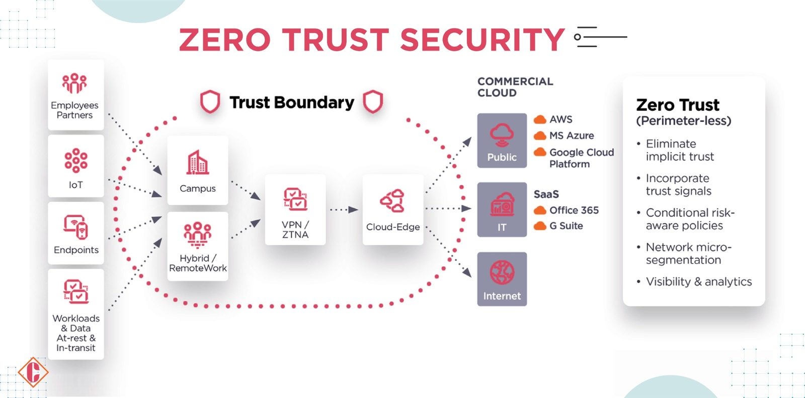

Public information
Names, roles, supplier relationships and leadership context support a convincing pretext.
Control: reduce exposure and monitor supplier riskThis page connects the ransomware incident to MITRE-style tactics and Zero Trust principles so the recommended controls are easy to justify to the board.
The map below shows how a supplier-trust weakness becomes a business-wide ransomware event, and where the control strategy interrupts the sequence.
Names, roles, supplier relationships and leadership context support a convincing pretext.
Control: reduce exposure and monitor supplier riskA fake survey domain creates the entry point through a trusted MSP relationship.
Control: mail filtering, reporting and domain checksKeylogger activity captures privileged credentials and removes the need for repeated phishing.
Control: MFA, privileged access and admin separationOver-privileged access enables movement across HQ, cloud services, stores and backup paths.
Control: segmentation and conditional accessPersonal data exposure changes the incident from outage management to regulatory risk.
Control: data classification and transfer monitoringFiles are encrypted, services fail and board-level decisions become time-sensitive.
Control: immutable backups and recovery orderZero Trust gives the CIO a business-friendly control narrative: every user, device, supplier session and administrative action must be verified, limited and monitored.

These control groups make the framework easier to convert into budget, technical tasks and governance reporting.
Protect cloud, admin, VPN and MSP access with strong authentication and separate admin accounts.
Separate POS, store, HQ, backup, supplier and cloud zones so compromise cannot spread freely.
Centralise logs and watch for unusual authentication, privilege escalation and data transfer behaviour.
Protect backup credentials, test restoration and define the recovery order before a crisis begins.
Review contracts, access scope, security controls, escalation paths and evidence obligations.
Train staff and suppliers to recognise phishing, suspicious domains and unusual requests.